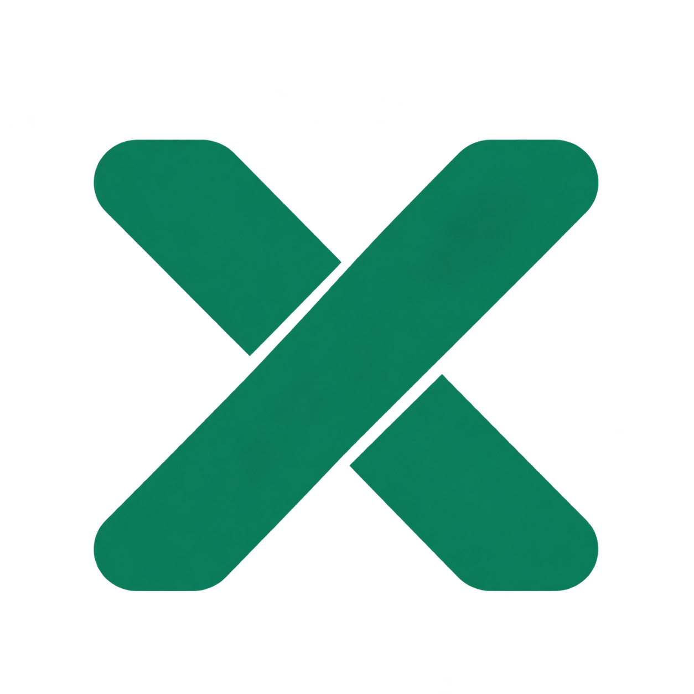
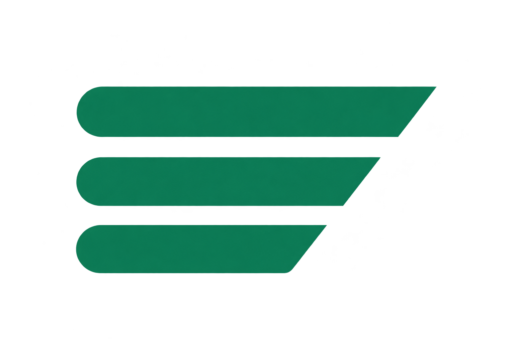

优先比较

净空 X
直接说明服务于 X；等宽圆角笔画与留白切口建立自己的轮廓。
16px32px48px
查看透明 PNG ↗X 更直接地说明产品服务的平台；K 更适合建立独立品牌。这里将“净空 X”与另外三种方向并排展示，用浅色背景检查整体观感。均为概念探索，尚未选定或接入插件。

直接说明服务于 X；等宽圆角笔画与留白切口建立自己的轮廓。
呼应 KeepXClean 的首字母，便于形成独立品牌。

三条内容逐步收敛，表达减少噪声；当前光晕初稿仅供方向比较。
保护与可靠感直观，和当前设计一致，但独特性相对较弱。
使用项目已有 Lucide 图标，统一 24 px 网格、1.75 px 线宽与圆角。默认灰绿色，选中为品牌绿，异常用琥珀色，删除等动作按需用红色。图标与文字共同表达动作。